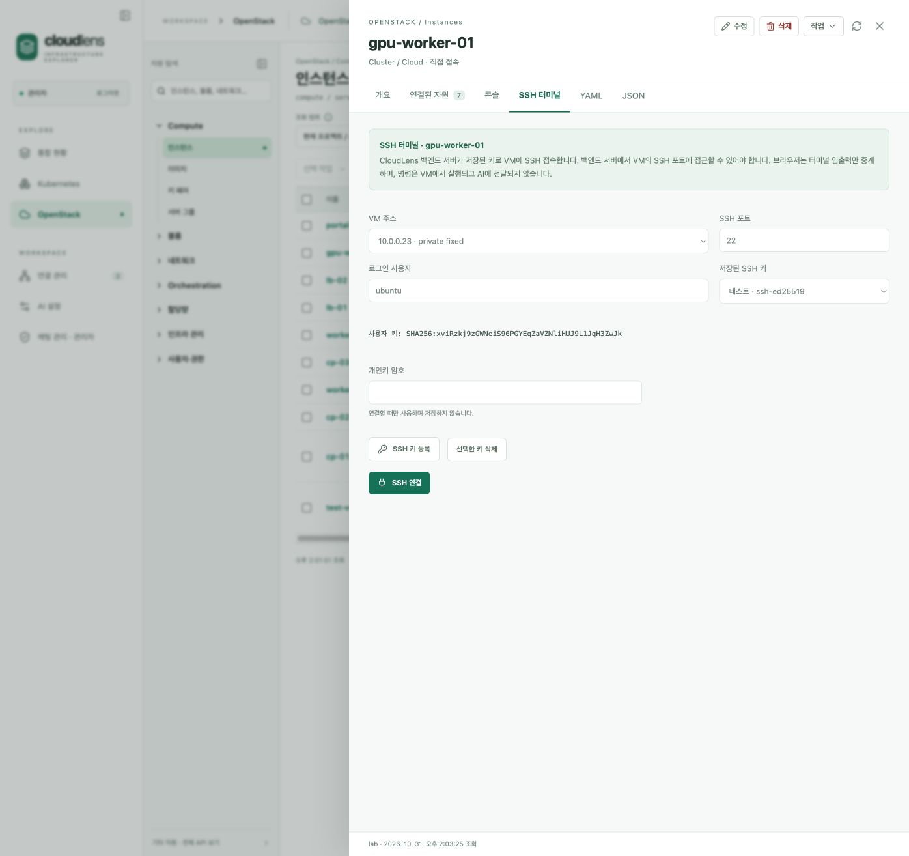
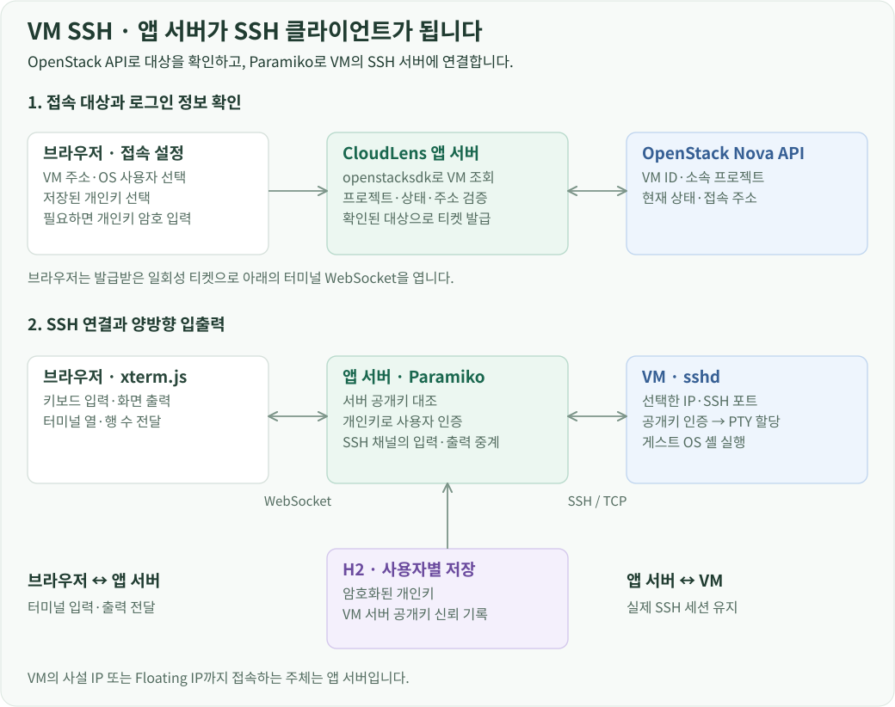
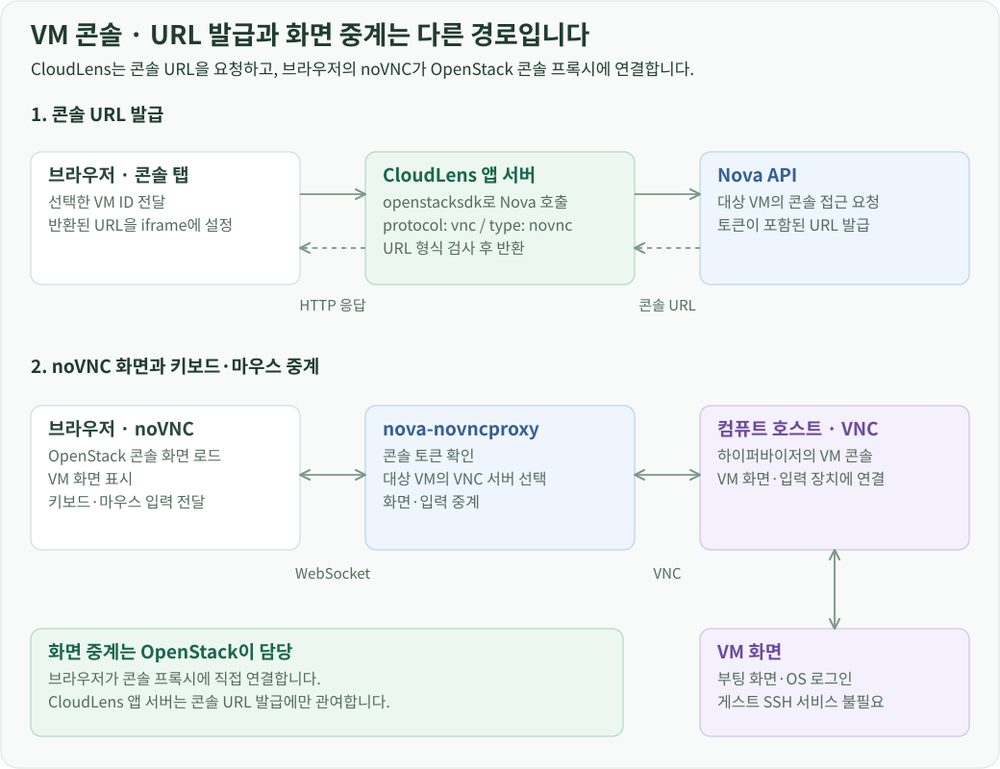
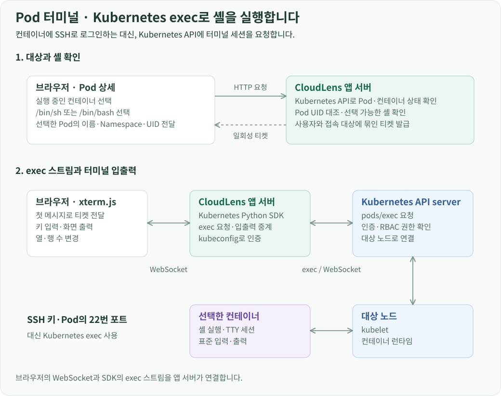
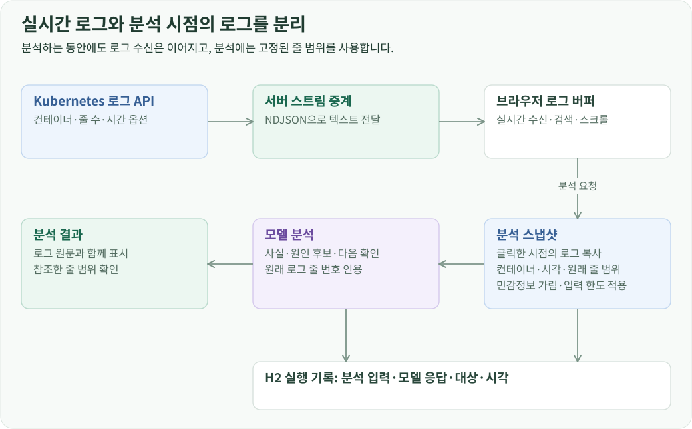

연결 방식 개요
자원 상세에서 터미널을 열면, 선택한 자원의 식별자와 연결 설정을 그대로 사용해 접속합니다. VM SSH는 앱 서버가 SSH 클라이언트가 되어 VM에 연결하고, Pod 터미널은 Kubernetes exec로 컨테이너 안에 셸을 실행합니다. VM 콘솔은 Nova에서 발급받은 noVNC URL을 브라우저가 직접 여는 방식입니다.
| 기능 | 브라우저의 역할 | 실제 원격 연결 |
|---|---|---|
| VM SSH | xterm.js로 입력·출력을 표시 | 앱 서버의 Paramiko → VM의 SSH 서버 |
| VM 콘솔 | OpenStack의 noVNC 화면을 열고 조작 | 브라우저 → 콘솔 프록시 → 하이퍼바이저의 VNC 서버 |
| Pod 터미널 | xterm.js로 입력·출력을 표시 | 앱 서버의 Kubernetes SDK → API server → 컨테이너 exec |
VM SSH: 앱 서버에서 VM의 셸에 접속
VM과 로그인 키 선택
사용자는 VM 상세에서 접속 주소, SSH 포트, OS 사용자 이름과 저장한 개인키를 선택합니다. 앱 서버는 openstacksdk의 compute.get_server()로 VM 상태, 프로젝트와 IP 주소를 조회합니다. 선택한 VM이 현재 프로젝트에 속하고 실행 중인지 확인하며, 접속 주소도 그 VM의 주소 목록과 대조합니다. OpenStack API는 여기까지 대상 확인을 맡고, 실제 SSH 연결은 Paramiko가 담당합니다.

OpenStack의 키 페어는 VM 생성 시 사용할 공개키를 관리합니다. SSH 로그인에는 그 공개키와 짝이 되는 개인키가 필요하므로, CloudLens에 개인키를 별도로 등록해 재사용하도록 했습니다. 개인키 원문은 사용자별로 구분하고 Fernet으로 암호화해 H2에 저장합니다. 이 암호화에 쓰는 마스터 키는 DB와 분리된 서버 파일에 보관합니다.
개인키 파일 자체에 암호가 걸려 있다면 접속할 때 암호를 입력합니다. 암호는 DB에 저장하지 않고, 접속 요청을 처리하는 동안 개인키를 읽는 데 사용합니다. 브라우저는 세션 티켓을 받은 뒤 입력한 암호를 비우고, 서버도 SSH 작업을 시작하면서 티켓에서 암호 필드를 꺼내 제거합니다.
서버 확인과 SSH 인증
앱 서버는 VM에 TCP 연결을 열고 SSH 핸드셰이크에서 서버 공개키를 받습니다. 처음 접속하는 대상이면 지문을 화면에 보여주고, 사용자가 신뢰한 서버 키를 저장합니다. 이 기록의 기준은 사용자·연결 프로필·VM ID·IP 주소·포트입니다. 이후 접속에서도 실제 서버 키가 저장된 키와 같은지 확인한 뒤 로그인 인증을 진행합니다.
여기서 개인키는 VM에 로그인하는 사용자를 증명하고, 서버 공개키는 접속 상대를 확인합니다. 서버 공개키를 얻는 절차가 사용자 키 선택과 별도로 가능한 이유도 SSH 핸드셰이크가 사용자 인증보다 먼저 이루어지기 때문입니다.

서버 키 검증이 끝나면 Paramiko의 Transport.auth_publickey()로 로그인합니다. 인증된 연결에서 채널을 열고 get_pty()로 가상 터미널을 할당한 다음 invoke_shell()로 셸을 시작합니다. 앱 서버에서 ssh 명령을 실행하는 대신 Python 라이브러리로 연결과 채널을 직접 관리합니다.
키보드 입력과 화면 출력
브라우저의 xterm.js는 터미널 화면을 그리고 키 입력을 받습니다. 입력은 WebSocket으로 앱 서버에 전달되고, 서버는 그 문자열을 SSH 채널에 씁니다. 반대로 VM에서 읽은 출력은 WebSocket으로 브라우저에 보내 xterm.js에 표시합니다. SSH 출력 바이트는 Base64로 전달한 뒤 브라우저에서 복원해, 한글 같은 문자가 청크 경계에서 나뉘어도 올바르게 처리하도록 했습니다.
따라서 이 경로에서 VM의 사설 IP나 Floating IP에 접근해야 하는 쪽은 앱 서버입니다. 사용자의 브라우저는 CloudLens에 연결하고, 앱 서버가 선택한 VM 주소와 SSH 포트까지 연결합니다.
VM 콘솔: Nova가 발급한 noVNC 화면 열기
VM 콘솔은 하이퍼바이저가 제공하는 VM의 화면과 키보드에 연결합니다. 앱 서버는 선택한 VM을 조회한 후 openstacksdk의 compute.create_server_remote_console()을 protocol='vnc', type='novnc'로 호출합니다. Nova는 해당 VM 콘솔에 접근할 토큰이 포함된 URL을 반환합니다.
CloudLens는 URL의 프로토콜과 호스트 형식을 검사한 뒤 브라우저로 전달합니다. 프론트엔드는 이 URL을 sandbox 속성을 지정한 iframe에서 열고, 별도 창으로 열기 기능도 제공합니다. 이 화면은 OpenStack이 제공하는 noVNC 클라이언트이며, VM SSH에서 사용한 xterm.js와는 다른 뷰어입니다.

URL을 연 뒤에는 브라우저의 noVNC가 nova-novncproxy에 WebSocket으로 연결합니다. 프록시는 토큰을 확인하고 대상 VM의 VNC 서버로 연결을 중계합니다. 이 과정은 Nova의 원격 콘솔 연결 방식을 사용합니다. CloudLens 서버는 URL 발급을 요청하고, 콘솔 화면과 키보드 데이터는 OpenStack 콘솔 프록시가 중계합니다.
이 때문에 VM SSH와 네트워크 조건도 다릅니다. SSH는 앱 서버에서 VM의 SSH 포트에 도달해야 하고, 콘솔은 사용자의 브라우저에서 OpenStack 콘솔 URL에 도달해야 합니다. 콘솔 연결은 게스트 OS의 SSH 서비스나 VM IP를 통하지 않으므로 부팅 화면과 OS 로그인 화면도 볼 수 있습니다.
Nova가 발급한 토큰은 콘솔에 접근할 권한을 부여합니다. 콘솔에 OS 로그인 화면이 나타나면 그 안에서 사용할 계정 인증은 별도로 이루어집니다. 포털에 저장한 SSH 개인키로 콘솔의 OS 로그인을 자동 처리하지는 않습니다. 콘솔을 닫으면 iframe을 제거하고, 다시 연결할 때 새 URL을 요청합니다.
Pod 터미널: Kubernetes exec로 컨테이너 안에 셸 실행
Pod 터미널은 Kubernetes의 pods/exec API를 사용합니다. Pod에 SSH 서버를 설치하거나 SSH 키로 로그인하는 방식이 아니라, Kubernetes에 선택한 컨테이너의 셸 실행을 요청하는 구조입니다.
Pod·컨테이너·셸 확인
프론트엔드는 Pod 상태에서 실행 중인 컨테이너를 찾아 선택지로 제공합니다. 일반 컨테이너뿐 아니라 실행 중인 init·ephemeral 컨테이너도 같은 방식으로 선택할 수 있습니다. 서버는 연결 프로필로 Kubernetes Python SDK의 API 클라이언트를 만들고 Pod를 다시 조회합니다.
이때 Namespace와 이름 외에 Pod UID도 비교합니다. 화면을 연 뒤 Pod가 삭제되고 같은 이름으로 새 Pod가 생성됐더라도, 사용자가 선택했던 대상과 다른 컨테이너에 접속하지 않도록 하기 위해서입니다. 삭제 중인 Pod와 실행 상태가 아닌 컨테이너도 연결 대상에서 제외합니다.
사용 가능한 셸은 /bin/sh, /bin/bash에 짧은 exit 0 명령을 실행해 확인합니다. 성공한 셸을 사용자가 선택하면 서버가 터미널 세션 티켓을 발급합니다. 실제 세션을 열기 직전에도 Pod UID와 컨테이너 상태를 다시 확인합니다.

SDK 호출에서 컨테이너 셸까지
앱 서버는 kubernetes.stream.stream()에 CoreV1Api.connect_get_namespaced_pod_exec를 전달합니다. 실행 명령은 선택한 셸 경로이고, stdin, stdout, stderr, tty를 활성화합니다. _preload_content=False로 설정해 응답을 한 번에 읽는 대신 열린 스트림을 계속 다룹니다.
Kubernetes Python SDK가 API server와 exec용 WebSocket을 연결하고, API server에서 노드의 kubelet과 컨테이너 런타임을 거쳐 셸이 실행됩니다. API server에서 kubelet으로 향하는 연결에는 로그 조회와 컨테이너 실행 기능이 포함됩니다. 이 요청의 인증과 권한은 등록한 kubeconfig와 Kubernetes RBAC의 pods/exec 권한을 따릅니다.
브라우저와 앱 서버 사이의 WebSocket, 앱 서버와 Kubernetes 사이의 exec 스트림은 서로 다른 연결입니다. 서버는 브라우저 입력을 write_stdin()으로 컨테이너에 보내고, 원격 출력을 읽어 브라우저에 전달합니다. Pod IP의 SSH 포트로 연결하는 과정은 없습니다.
Pod 터미널과 VM SSH가 공유하는 세션 처리
두 터미널은 원격 접속 방식이 다르지만 브라우저에서 세션을 시작하고 입출력을 주고받는 규칙은 공유합니다. 먼저 HTTP 요청에서 로그인 사용자와 연결 프로필의 소유권, 접속 대상을 확인하고 일회성 티켓을 발급합니다. 서버 메모리의 티켓에는 사용자, 프로필, 대상 정보와 pod 또는 ssh 접속 종류가 들어갑니다.
브라우저는 공통 /api/terminal WebSocket을 열고 첫 메시지로 티켓을 보냅니다. 서버는 WebSocket에서도 로그인 쿠키와 Origin을 확인한 뒤 티켓을 소비합니다. 티켓은 60초 동안 유효하고 한 번 사용하면 제거됩니다. 접속 정보 전체를 WebSocket URL에 넣는 대신, 앞서 검증한 요청과 스트림을 이 티켓으로 연결한 것입니다. VM 콘솔에는 이 티켓을 사용하지 않고 Nova가 발급한 콘솔 URL을 사용합니다.
실제 원격 I/O는 작업 스레드에서 처리하고, 비동기 WebSocket 핸들러와 입력·출력 큐로 연결합니다. 브라우저는 input과 resize 메시지를 보내고, 서버는 ready, output, error, exit 이벤트를 반환합니다. 작업 스레드의 closed 신호를 받으면 핸들러가 WebSocket을 닫습니다. 같은 프론트엔드 터미널이 이 이벤트를 처리하므로 SSH와 exec의 차이는 서버의 원격 연결 처리에 모입니다.
화면 크기가 바뀌면 xterm.js의 FitAddon으로 열·행 수를 계산해 서버에 보냅니다. Pod에서는 exec의 크기 변경 채널로 Width·Height를 전달하고, SSH에서는 Paramiko의 resize_pty()를 호출합니다. 그 결과 원격 셸도 브라우저 화면 너비에 맞춰 줄바꿈과 전체 화면 프로그램을 처리합니다.
사용자가 접속을 끊거나 상세 화면을 닫으면 WebSocket을 종료하고 작업 스레드에 중지 신호를 보냅니다. Pod exec 스트림 또는 SSH 채널·Transport를 닫은 뒤 세션을 정리합니다. 셸이 먼저 종료된 경우에도 종료 코드와 상태를 브라우저에 보내 같은 흐름으로 마무리합니다.
컨테이너 로그 스트림
사용자는 컨테이너, 최근 줄 수, 타임스탬프와 실시간 수신 여부를 선택합니다. 재시작 전 로그를 선택하면 같은 Pod에서 직전에 종료된 컨테이너 인스턴스의 로그를 요청합니다.

서버는 프로필 소유자, Pod UID와 컨테이너 이름을 확인한 후 Kubernetes 로그 API에 옵션을 전달합니다. Pod 이름이 같아도 UID가 바뀌면 화면에서 선택했던 대상과 구분합니다.
로그 응답은 NDJSON 스트림으로 중계합니다. 각 메시지에는 시작·데이터·종료·오류 종류를 넣고, 데이터 메시지에는 읽은 텍스트를 담습니다. 프론트엔드는 스트림을 읽어 버퍼에 추가하고 검색어와 자동 스크롤 설정을 적용합니다.
실시간 수신을 중지하거나 탭을 닫으면 브라우저 요청을 취소하고 서버도 원격 스트림을 닫습니다. 다시 불러오기는 선택한 최근 줄 수로 새 스트림을 시작합니다.
AI 로그 분석의 입력 고정
AI 분석 버튼을 누르면 현재 불러온 로그를 복사해 분석용 스냅샷을 만듭니다. 컨테이너, 현재·재시작 전 구분, 수집 시각과 줄 범위를 함께 저장합니다. 그 뒤에도 화면의 실시간 로그 수신은 별도로 동작합니다.

서버는 모델 입력 한도에 맞춰 최신 줄부터 분석 범위를 선택하고, 원래 줄 번호와 시작·끝 줄을 보존합니다. 모델에는 이 로그와 대상 정보를 전달하고 사실·원인 후보·다음 행동을 Markdown으로 받습니다. 로그 줄 참조를 통해 원문을 확인할 수 있게 하고, 입력과 응답을 같은 실행 ID 아래 저장해 관리자 화면에서 다시 읽을 수 있게 했습니다.